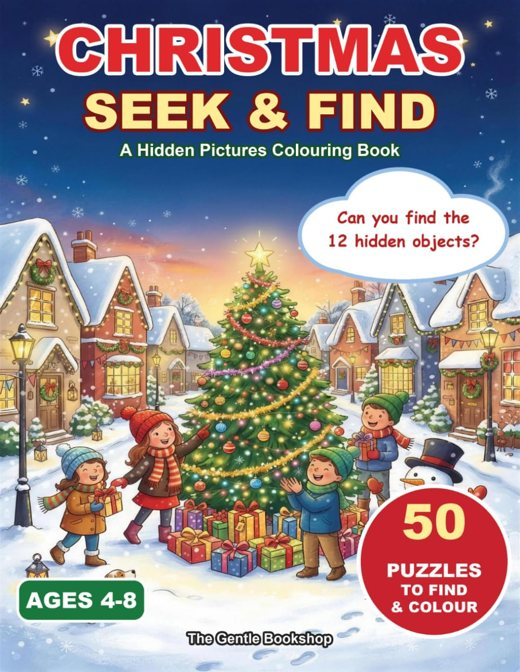

Christmas Activity Sampler
19 activity pages from 4 of our Christmas books: seek and find for kids 4 to 8, and grayscale coloring for teens and grown-ups.
19 activitiesKids and grown-upsPDF, 8 MBPrints on Letter or A4
Download the free pack (PDF)